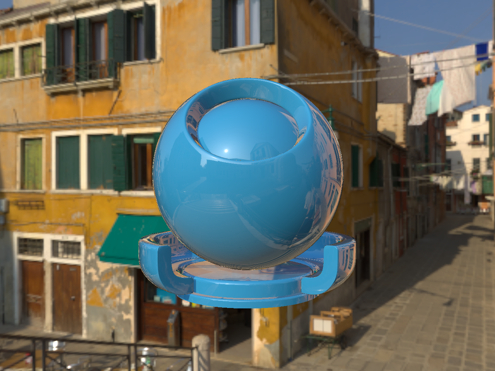
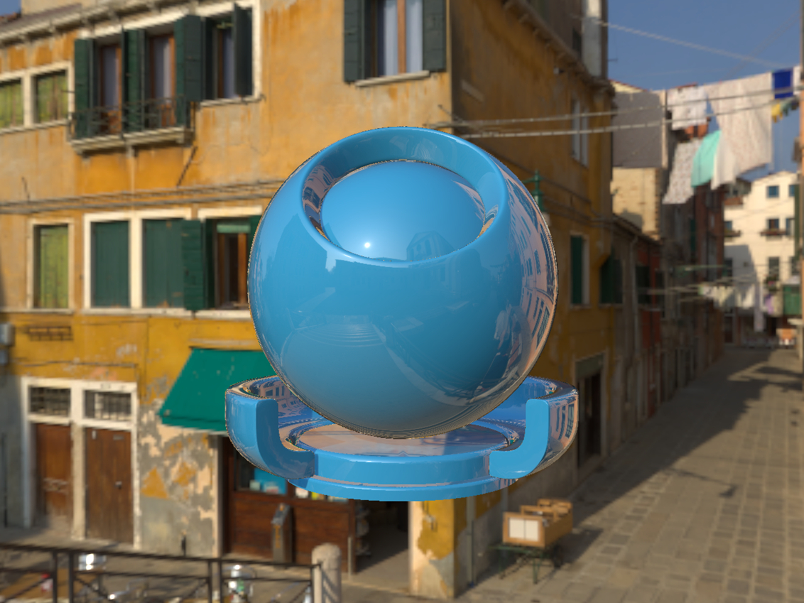

At Lucasfilm, my main project focused on MaterialX, which is an open source software used to render many materials, regardless of their rendering environment or implementation. Specifically, I worked in two MaterialX subprojects - MaterialX Lama and OpenPBR.
See my lucasfilm github for the actual code behind this work!
MaterialX Lama
MaterialX Lama is a state-of-the-art material layering system, developed at ILM and used within Pixar Renderman. At the time of my project, MaterialX Lama within MaterialX hadn't been updated since 2021. My work clarified the future of MaterialX Lama and harmonized well with an active collaboration between Lucasfilm/ILM and Pixar.
What I Did:
- Developed two new Lama nodes based off the Pixar Renderman definitions - LamaGeneralizedSchlick and LamaIridescence.
- Updated the rest of the Lama suite definitions to be consistent with Renderman deefault values and definitions
LamaGeneralizedSchlick and LamaIridescence

Entire Lama Suite Updated


OpenPBR and Standard Surface - Shader Translation
OpenPBR is a new shading model (essentially used to model many different types of materials) developed by Adobe, Autodesk, and MaterialX - it was released recently in 2023. Standard Surface is also a shading model, but was developed by Autodesk and has been around for awhile. These two implementations differ in their implementations of physically based properties, such as coat, metal, and sheen. As a result, translating from one shading model to another requires some thought to reach visual parity
The idea of Shader Translation from Standard Surface to OpenPBR is that users interested in OpenPBR can translate assets created in Standard Surface to OpenPBR. The reverse translation is useful for users who want to participate in OpenPBR but are using versions of MaterialX that don't have OpenPBR.
Standard Surface -> OpenPBR Shader Translation
Example 1: copper (standard surface) translated to copper (openPBR)
Example 2: brass (standard surface) translated to brass (openPBR)
Example 3: thin film (standard surface) translated to thin film (openPBR)


OpenPBR->Standard Surface Shader Translation
Example 1: default (openPBR) translated to default (standard surface)
Example 2: carpaint (openPBR) translated to carpaint (standard surface)
 

Example 2: glass (openPBR) translated to glass (standard surface)


Example 3: ketchup (openPBR) translated to ketchup (standard surface)


Example 4: pearl (openPBR) translated to pearl (standard surface)


Reflections:
- As an initial pass, this made great progress in helping users try out the new shading model OpenPBR.
- The two shading models differ in their implementation of coat, where OpenPBR allows the coat to influence the color and roughness of layers beneath, while standard surface generally doesn't take this approach. As a result, there's just some natural difference when it comes to examples with coat! It will be exciting to see how the shader translation graphs grow and evolve to become more accurate over time.